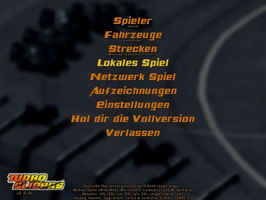
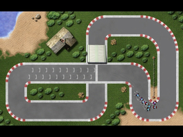
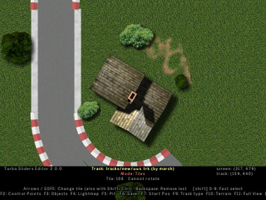

Turbo Sliders
Dieser Artikel wurde für die folgenden Ubuntu-Versionen getestet:
Ubuntu 16.04 Xenial Xerus
Ubuntu 14.04 Trusty Tahr
Zum Verständnis dieses Artikels sind folgende Seiten hilfreich:
 Turbo Sliders
Turbo Sliders  ist ein kommerzielles Rennspiel welches aus der Vogelperspektive gespielt wird. Man steuert einen von 5 möglichen Rennwagen über kurvige Rennstrecken mit Brücken oder Sprungschanzen. Die uneingeschränkte Demoversion bietet den vollen Funktionsumfang.
ist ein kommerzielles Rennspiel welches aus der Vogelperspektive gespielt wird. Man steuert einen von 5 möglichen Rennwagen über kurvige Rennstrecken mit Brücken oder Sprungschanzen. Die uneingeschränkte Demoversion bietet den vollen Funktionsumfang.
Mit dem integrierten Editor können weitere Rennstrecken gestaltet werden.
|  |  |
| Menü | Spieleszene |
Installation¶
Das Spiel kann von der offiziellen Seite oder holarse-linuxgaming.de heruntergeladen werden. Das Archiv entpacken [1] z.B. nach ~/Spiele/sliders. Über sliders.linux kann das Spiel aus dem Installationsverzeichnis heraus gestartet [2] werden. Auf Wunsch einen Menüeintrag vornehmen [3].
|  |
| Editor |
Editor¶
Der Editor kann aus dem Installationsverzeichnis heraus mit editor.linux gestartet [2] werden.
Sofern man einen eigenen Track gespeichert hat wird dieser im Verzeichnis ~/Spiele/sliders/tracks/new/ gespeichert. Dieser besteht aus einer .trk-Datei mit den notwendigen Informationen sowie eine .png-Datei mit einer Vorschau der Rennstrecke.
Grundinformationen zur Erstellung eigener Level sind in ~/Spiele/sliders/doc/manual-editor.htm zu finden.
| Editor | |
| Taste(n) | Funktion |
| F1 | Tile mode |
| F2 | Control Point Mode |
| F3 | Object Mode |
| F4 | Lightmap Mode |
| F5 | Pit Mode |
| F6 | Speichern |
| F7 | Start Position Mode |
| F9 | Track Type Mode |
| F10 | Terrain Mode |
| F11 | Full View |
 | Objekt platzieren |
 | Objekt drehen |
 (Mausrad) (Mausrad) | Objektauswahl |
Fahrzeuge¶
Für Abwechslung sorgen zusätzliche Fahrzeuge. Diese sind im Forum zu finden. Nachdem man das gewünschte Archiv heruntergeladen und entpackt [1] hat findet man die folgenden Dateien vor:
Ferrari_10.car - Konfigurationsdatei, welche das Auto definiert
Ferrari_10.png - Bildliche Darstellung
FerrariF10.wav - Sounddatei sofern in der Konfigurationsdatei definiert
Der Aufbau einer solchen Datei, welche modifiziert [4] werden kann:
Car Ferrari_10 description 7 Base: Maranello - Italy Team Principal: Stefano Domenicali Drivers: F Massa, F Alonso Chassis: F10 Engine: Ferrari Type 056 Tyres: Bridgestone Potenza First Season: 1950 antislide 7 acceleration 92 enginefriction 0.0 viscosity 0.27 nonslidesector 0.8 slidebraking 1 slidedeceleration 20 braking 90 steering 1.5 elasticity 0.3 grip 230 weight 500 mask JA_F1-pat.png 0 0 32 32 image Ferrari_10.png 0 0 50 65 3.3 tire 10.5 26.0 tire 20.5 26.0 enginesample FerrariF10.wav End
Probleme & Lösungen¶
Fehlender Sound¶
Fehlt der Sound beim Spielstart muss der Sound durch PulseAudio gerootet werden. Das Spiel kann mit einem vorangestellten padsp gestartet [2] werden:
padsp ./sliders.linux


Infobox¶
| Turbo Sliders | |
| Genre: | Rennspiel |
| Sprache: |  |
| Veröffentlichung: | 2003+ |
| Entwickler: | Antti Mannisto |
| Systemvoraussetzungen: | - |
| Medien: | Download |
| Strichcode / EAN / GTIN: | - |
| Läuft mit: | nativ |
- Erstellt mit Inyoka
-
 2004 – 2017 ubuntuusers.de • Einige Rechte vorbehalten
2004 – 2017 ubuntuusers.de • Einige Rechte vorbehalten
Lizenz • Kontakt • Datenschutz • Impressum • Serverstatus -
Serverhousing gespendet von